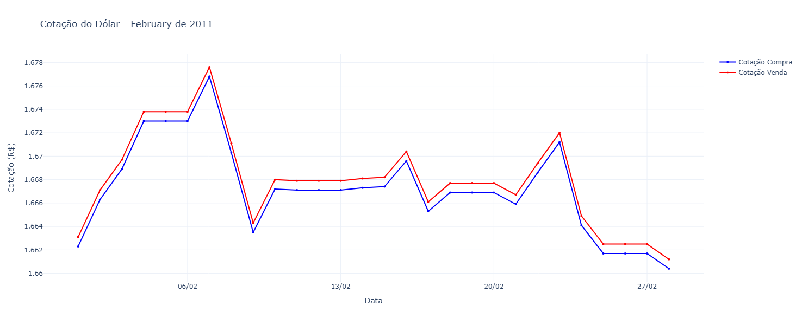

Neste post, vamos apresentar um programa incrível focado em uma funcionalidade super útil: consultar a cotação do Dólar Americano (USD) contra o Real Brasileiro (BRL) em qualquer data específica.
Neste artigo, vamos analisar passo a passo um código em Python que consulta a API oficial do Banco Central para obter as cotações do dólar em um determinado mês — e, ao final, gera um gráfico bem apresentado usando Plotly.
Você vai entender como funcionam:
- Manipulação de datas
- Requisições HTTP
- Tratamento da resposta JSON
- Preenchimento de dias sem cotação (como finais de semana e feriados)
- Criação de gráficos interativos
Vamos ao código — e depois à explicação detalhada.
A função f(periodo) recebe uma string no formato MMYYYY, por exemplo "022011" (fevereiro de 2011). Com isso, ela:
- Identifica o primeiro e o último dia do mês.
- Consulta a API oficial PTAX do Banco Central.
- Converte as cotações retornadas em um dicionário organizado.
- Preenche automaticamente os dias sem cotação usando a última cotação conhecida.
- Gera um gráfico interativo com as cotações de compra e venda.
1. Interpretando o período informado
first_date = datetime.strptime(periodo, "%m%Y")
last_date = first_date.replace(
day=calendar.monthrange(first_date.year, first_date.month)[1]
)Aqui:
first_date→ primeiro dia do mêslast_date→ último dia do mesmo mês (usandocalendar.monthrange)
Ou seja, com "022011":
- first_date = 01/02/2011
- last_date = 28/02/2011
2. Montando a URL da API do Banco Central
url = f"https://olinda.bcb.gov.br/olinda/servico/PTAX/versao/v1/odata/...A API PTAX exige datas no formato MM-DD-YYYY, então fazemos:
data_inicial = first_date.strftime("%m-%d-%Y")
data_final = last_date.strftime("%m-%d-%Y")A URL incluí essas datas para filtrar as cotações somente do período desejado.
3. Fazendo a requisição HTTP
response = requests.get(url)
response.raise_for_status()
data = response.json()O código tenta:
- Fazer a requisição
- Confirmar que não houve erro
- Converter a resposta para JSON
Se algo der errado, o usuário é avisado.
4. Organizando as cotações retornadas
A API retorna vários registros com:
- Data/hora da cotação
- Valor de compra
- Valor de venda
O código transforma isso em um dicionário mais fácil de usar:
cotacoes_dict[data_cotacao.date()] = {
'compra': cotacao['cotacaoCompra'],
'venda': cotacao['cotacaoVenda']
}Assim, fica fácil consultar a cotação de qualquer dia.
5. Lidando com dias sem cotação
Nem todo dia tem cotação — por exemplo, sábados, domingos e feriados.
Para manter o gráfico contínuo (sem buracos), o código reutiliza a última cotação existente:
if date_key in cotacoes_dict:
ultima_cotacao = cotacoes_dict[date_key]
if ultima_cotacao:
datas.append(current_date)
valores_compra.append(ultima_cotacao['compra'])
valores_venda.append(ultima_cotacao['venda'])Isso é conhecido como forward fill: se não houver cotação no dia atual, usa-se o valor do último dia útil.
6. Criando o gráfico interativo com Plotly
Usando plotly.graph_objects, o código cria duas curvas:
- Linha azul — cotação de compra
- Linha vermelha — cotação de venda
fig.add_trace(go.Scatter(...))
fig.update_layout(...)O gráfico vem com:
✔ Interatividade (hover) ✔ Marcadores ✔ Estilo claro ✔ Eixo X com datas formatadas
No fim:
return figE o gráfico aparece na tela com:
fig.show()Resultado final
A função gera automaticamente um gráfico completo, limpo e informativo como este:
- Datas no eixo X
- Valor do dólar em reais
- Linhas suaves com marcações
- Interação ao passar o mouse
Conclusão
Este código mostra como combinar:
- APIs públicas
- Tratamento de datas
- Processamento de dados
- Visualização com Plotly

Arquivo com o codigo pronto